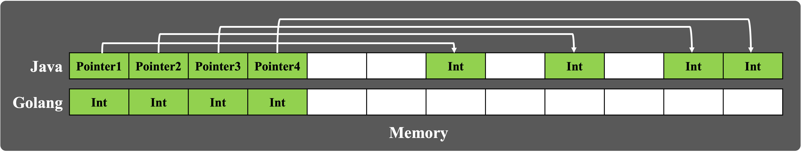
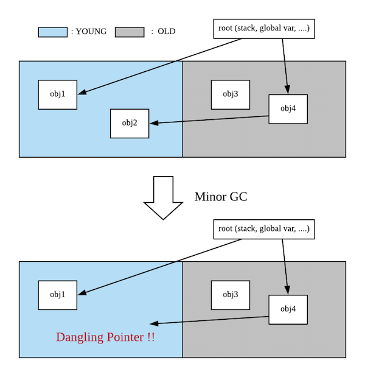
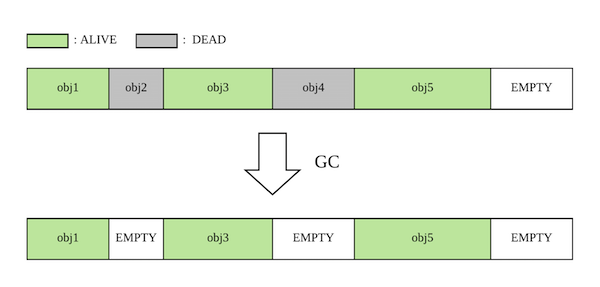
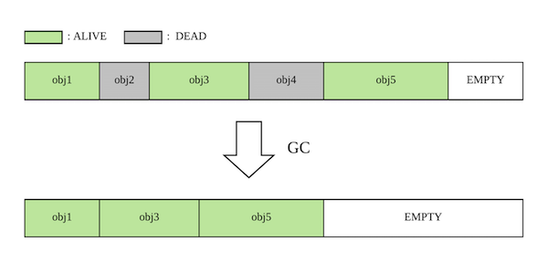

Recently, I had a job interview in Ebay. They generally use Java for their development. And my programming language is Golang. So, they asked me that What is difference between Golang and Java?. As a matter of fact, I never thought about that. I would like to take this opportunity to summarize the differences between Golang and Java.
Golang vs Java
What is Golang and Java?
Golang
Golang is an open-source language from Google that made in 2011.
The syntax of Golang is close to “C” because the language’s compiler was built in C. But it is now written in Golang, allowing the language to remain self-hosted.
Golang is a concurrent programming language designed for modern multicore processors, meaning it can do numerous tasks at once. It also features deferred garbage collection, which manages memory to run programs quickly.
Java
Java is a statically typed general-purpose programming language. Sun Microsystems developed and released Java in 1995.
Java used to be the language of choice for server-side applications, but it no longer holds that position. Despite that, hundreds of various applications around the world employ it. Various platforms, ranging from old legacy software on servers to modern data science and machine learning applications, use Java.
There are ample pre-built modules and codes available because Java is famous among developers. These modules and developer availability make coding in Java easy.
Java is versatile. It runs anywhere there’s a processor. It’s similar to a compiled language where the virtual machine breaks down the code into bytecode before compiling it.
Golang vs Java
| Golang | Java | |
|---|---|---|
| Type Hierarchy | Cannot | Can(OOP structure) |
| Performance | High(Non-virtual machine) | Low(JVM) |
| Community | Small | Large |
| Concurrency | Powerful | less-Powerful |
| Garbage Collection | Static | Dynamic |
| run on | OS(so, performance high, light weighted) | JVM() |
Both Java and Golang are powerful, popular, and useful. But still, they have significant differences.
Java is 1. object-oriented(OOP), and has a 2. larger library and community.
Golang is 1. better supports concurrency, 2. light-weight, fast.
While Golang runs faster than Java, Java has more features and better support.
Difference in usage of memory and Garbage Collection
One advantage that we believe Go has over Java is that it gives you more control over memory layout. For example, a simple 2D graphics package might define:
1
2
3
4
5
6
type Rect struct {
X_top Int
X_bottom Int
Y_top Int
Y_bottome Int
}
In Go, a Rect is just four integers contiguous in memory.
In Java, 4 Integer separately allocated in memory as different objects.
This requires more allocated objects, taking up more memory, and giving the garbage collector more to track and more to do. On the other hand, it does avoid ever needing to create a pointer to the middle of an object.

- Go gives you more control over memory layout, and you can use that control to reduce the load on the garbage collector.
So, if you want to remove Rect from memory, just delete start address with four integers size. This avoids memory fragmentation and allocates memory at the end of the heap when new objects are created, allowing for fast memory allocation and deletion. I think that as memory is bigger and bigger, this trend would be fitted.
- Case of Go, they has GC in their executable file. Java, however, they has GC in JVM. Thus, Go is more light-weight and highly productable.
So, in primitive Java, it has memory fragmentation issues. And how do Java overcomes memory fragmentation? To deal with these major disadvantages, they use COMPACTION.
- Compaction involves moving objects around memory and collect them into contiguous blocks a memory. This is not cheap. Not only does moving the blocks from one memory location to another cost CPU cycles, but updating every reference to these objects to point to the new locations also costs CPU cycles. Doing these updates requires freezing all threads. You cannot update references while they are being used. This typically causes Java programs to have complete freezes of several hundred milliseconds where objects get moved around, references updated and unused memory reclaimed. Adding Complexity
To reduce these long pauses(Stop-The-World), Java uses what is called GENERATIONAL garbage collectors.
The purpose of Generational Garbage Collection is that classifying objects by their age(times they survived in the GC, etc.) to improve GC efficiency
There is a hypothesis that, in many applications, most newly allocated objects in memory die more frequently. Following this hypothesis, Generational GC can give you improvements in efficiency by eliminating the need to scan long-lived objects multiple times.
Thus Java adopted this hypothesis and create their strategy with Generational GC.
- Frequently performing GC in the new object allocation area(Minor GC)
- Objects surviving multiple times(oldest) in the area GC are promoted and moved to the less frequent area(Major GC).

The collector in the current Go distributions is reasonable but by no means state of the art. To be clear, Go’s garbage collector is certainly not as good as modern Java garbage collectors, but we believe it is easier in Go to write programs that don’t need as much garbage collection to begin with, so the net effect can still be that garbage collection is less of an issue in a Go program than in an equivalent Java program.
In summary, if you want a Java class to hold ten different pieces of information of different types, you need to have ten different memory allocations and store ten pointers.
In Go, you can use a struct with fields of the appropriate type, and use a single memory allocation. This saves the space required by the pointers and as an extra bonus also saves some time for the garbage collector.
So, Java and Go have different concept in how they managing memory. I cannot exactly say which is better than the other. But one thing is sure that as Golang doesnt need virtual machine(only need machine code), Golang consumes less memory than Java.
reference from https://www.quora.com/Why-is-Golangs-memory-usage-so-much-better-than-Javas
Here is a memory usage when Java and Go compile or run their code.
1
2
3
4
5
6
7
8
9
10
11
Compile Time Run time
Go Source code + machine code
Go compiler +
machine code
Java Source code + bytecode
JVM JIT + JVM JIT +
JVM Interpreter + JVM Interpreter
javac compiler + machine code
bytecode
- Even print “hello world” requires loading the entire JVM in memory.
Static GC(Golang) vs Dynamic GC(Java)
Golang do not re-arrange objects in heap when they remove some of objects. And that is one of the static GC’s characteristic. Thus, static GC has issue that memory fragmentations occurs. 
To handle that fragmentation issues, Golang use TCMalloc(Thread-Caching Malloc) for efficient memory management(for multi-thread programming)!
What is TCMalloc?
TCMalloc is Thread-Caching Malloc.
- TCMalloc reduces lock contention for multi-threaded programs.
TCMalloc is faster than the glibc 2.3 malloc (available as a separate library called ptmalloc2) and other mallocs. ptmalloc2 takes approximately 300 nanoseconds to execute a malloc/free pair on a 2.8 GHz P4 (for small objects).
Another benefit of TCMalloc is space-efficient representation of small objects.
TCMalloc treates objects with size <= 32K (“small” objects) differently from larger objects. Large objects are allocated directly from the central heap using a page-level allocator (a page is a 4K aligned region of memory). I.e., a large object is always page-aligned and occupies an integral number of pages.
Java has Dynamic GC

- Also Java has adopted aging system(Generational garbage collection) for Garbage Collection.
To summarize, Golang use TCMalloc to reduce lock contention for multi-threaded programs. So, as most server leverage multi-threaded programs, Golang can reduce server’s memory(Golang dont need virtual machine) and reduce lock contention which means Golang run faster than Java.
– In Korean –
Java는 JVM 위에서 돌아가기 때문에 실행하기 위해선 byte코드를 machine코드로 변환하는 과정이 필요하다. 반면 golang은 빌드과정에서 이미 machine코드로 변환했기 때문에 바로 동작할 수 있다. 빌드에 걸리는 시간도 GO 언어 내부적으로 최적화를 많이 해둬서 빠른편이다. GC는 각기 다른 측면이 있기에 무엇이 낫다고 정할 수는 없지만, (1) 경량 스레드를 지원하며, (2) 스레드 별 cashing을 적극적으로 지원하는 Golang이 multi-threading 환경에서는 더 낫다고 보여진다. 즉, 비동기를 위한 multi-threading 환경이 적용된 server는 자신의 퍼포먼스를 증가하기 위해 Golang을 선택하는 것은 타당하다고 생각된다.
Difference in Concurrency and Simplicity
Java uses OS thread to perform parallel execution of work through green threads(threads managed by language runtime). Golang uses OS thread through goroutines. So in the parallelism there can’t be significant difference between both implementations.
But in concurrency there is huge difference. In java JVM map its green threads to OS threads while Golang brings mapping goroutines to OS threads into deep abstraction level through go scheduler(run in go-runtime, not virtual machine).
Comparison of Concurrency programming with example
Java
1
2
3
public static void main(string[] args){
new FixedThreadPoolExecutor();
}
1
2
3
4
5
6
7
8
9
10
11
12
13
14
15
16
17
18
19
20
21
22
23
package taskExecutor;
import java.util.concurrent.TimeUnit;
public class Task implements Runnable {
private String name;
public Task(String name){
this.name = name;
}
public String getName(){
return name;
}
@Override
public void run() {
try{
Long duration = (long)(Math.random()*10);
System.out.println("Doing a task during : " + name);
TimeUnit.SECONDS.sleep(duration);
}catch (InterruptedException e){
e.printStackTrace();
}
}
1
2
3
4
5
6
7
8
9
10
11
12
13
14
15
16
17
package taskExecutor;
import java.util.concurrent.Executors;
import java.util.concurrent.ThreadPoolExecutor;
public class FixedThreadPoolExecutor {
public FixedThreadPoolExecutor(){
ThreadPoolExecutor executor = (ThreadPoolExecutor)Executors.newFixedThreadPool(4);
for(int i=0; i<10;i++){
Task task = new Task("Task" + i);
System.out.println("A new task has been added: "+ task.getName());
executor.execute(task);
}
System.out.println("Maximum threads inside pool " + executor.getMaximumPoolSize());
executor.shutdown();
}
}
Golang
- As you can see, Golang is more simple than Java. With Golang, we can easly access IPC with channel.
1
2
3
4
5
6
7
8
9
10
11
12
13
14
15
16
17
18
19
20
21
22
23
24
25
26
27
28
29
30
31
32
33
34
35
36
37
38
39
40
41
package main
import (
"runtime"
"fmt"
)
func main() {
nCPU:=runtime.NumCPU()
runtime.GOMAXPROCS(nCPU)
const maxNumber = 100
ch := make(chan int)
defer close(ch)
go Generate(ch)
for i:=0; i<maxNumber;i++{
prime := <-ch
fmt.Println(prime)
ch1:=make(chan int)
go Filter(ch,ch1,prime)
ch=ch1
}
}
func Generate(ch chan<- int){
for i:=2; ;i++ {
ch <-i
}
}
func Filter(in <-chan int,out chan <-int, prime int){
for{
i:= <-in
if i%prime !=0{
out <- i
}
}
}
For short, Go has much better concurrency handling compared to Java.
In Java the concurrence runs within autonomous threads, which are quite expensive to create and manage and can only communicate with each other via shared (volatile) variables or return values. It has historical reasons, because Java has been designed when very little concurrency in mind, since concurrency was not really possible on personal computers of that time and was added later on, but as an addition, not a core design feature.
Go, on the other hand, has been designed with concurrency in mind. It inverts the approach:
‘Do not communicate by sharing memory; instead, share memory by communicating.’
To realize this it introduced channels, which are best understood as synchronized ques in Java word. One go subprocess is called goroutine and can write into a unbuffered channel and wait until the written value has been picked up by a different goroutines or fill its buffer when the channel is buffered. The whole synchronization is handled by go. It’s also worth mentioning that go routines are much cheaper to create and much more lightweight so you’ll find them all over the place/code.
reference from https://www.quora.com/How-does-Java-concurrency-compare-to-Golang
Go Runtime vs Java Virtual Machine
Does Go have a runtime?
Go does have an extensive library, called the runtime, that is part of every Go program. The runtime library implements garbage collection, concurrency, stack management, and other critical features of the Go language. Although it is more central to the language, Go’s runtime is analogous to libc, the C library.
- Go has small runtime in their binary file when Java has runtime in JVM.
It is important to understand, however, that Go’s runtime does not include a virtual machine, such as is provided by the Java runtime. Go programs are compiled ahead of time to native machine code (or JavaScript or WebAssembly, for some variant implementations). Thus, although the term is often used to describe the virtual environment in which a program runs, in Go the word “runtime” is just the name given to the library providing critical language services.
References
- http://goog-perftools.sourceforge.net/doc/tcmalloc.html
- https://stackoverflow.com/questions/14322724/what-is-the-go-language-garbage-collection-approach-compared-to-others
- https://groups.google.com/g/golang-nuts/c/m7IFRYnI-L4
- https://go.dev/doc/faq#runtime
- https://www.turing.com/blog/golang-vs-java-which-language-is-best/
- https://velog.io/@kineo2k/Go-언어의-GC
- https://engineering.linecorp.com/ko/blog/go-gc/